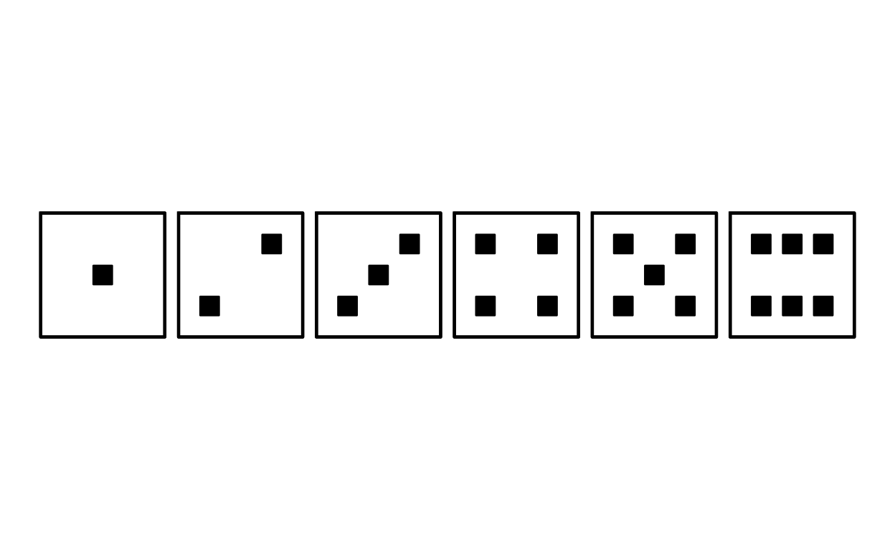
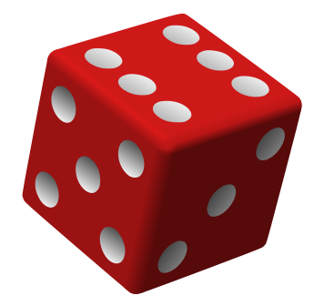
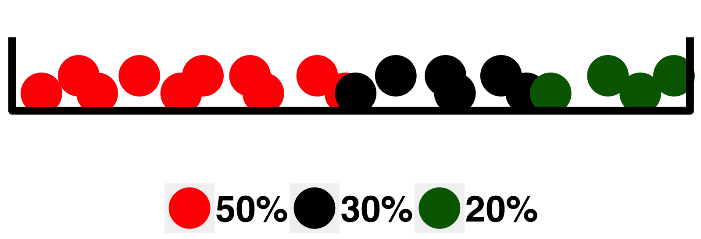

Definitions: Sample Space, Events
Random experiment
By the term random experiment we assume any process, which outcome is unknown in advance.
Sample space
A collection of all possible outcomes (\(\Omega\)).
Sample point
An element \(\omega \in \Omega\).
Event
A subset \(A\) of sample points, \(A \subset \Omega\), for which a statement about an outcome is true.
Example (Rolling a die)

- Random experiment: rolling a six-sided die.
- Sample space: \(\Omega = \{1, 2, 3, 4, 5, 6\}\).
- Events:
- \(A = \text{"a number is even"} = \{2, 4, 6\}\).
- \(B = \text{"a number is divisible by 3"} = \{3, 6\}\).
- \(C = \text{"a number is larger than 2"} = \{3, 4, 5, 6\}\).
Operations with events
Sum of events
An event \(A + B\) (or \(A \cup B\)) is called a sum of two events, and it means that either \(A\) or \(B\), or both are true.
Product of events.
An event \(A \cdot B\) (or \(A \cap B\)) is called a product of two events, and it means that both \(A\) and \(B\) are true simultaneously.
Mutually exclusive events.
Two events \(A\) and \(B\) are Mutually exclusive if they cannot be true simultaneously, and \(A \cdot B = \emptyset\) (impossible event).
Complement
An event \(A^c\) is called a complement of an event \(A\) (or an opposite event):
- \(A + A^c = \Omega\) (sample space)
- \(A \cdot A^c = \mathcal{\emptyset}\) (impossible event)
Probabilities
Probabilities are numbers assigned to the events and express the chances of events’ occurrences.
- \(\text{P}\left(\emptyset\right) = 0\).
- \(\text{P}\left(\Omega\right) = 1\).
- For any event \(A\), \(0 \leq \text{P}\left(A\right) \leq 1\).
Classical definition
Probability of an event \(A\) is defined as \[ \text{P}\left(A\right) = \frac{\text{number of sample that belong to the event }A}{\text{total number of sample points in the sample space }\Omega} = \frac{N_A}{N_\Omega}. \] Remark. The probability defined by the formula above is a proper approach in the situations when each sample point from a sample space has equal chance to occur.
Example (Classical definition of probability)

- Sample space: \(\Omega= \{1, 2, 3, 4, 5, 6\}\).
- Events:
- \(A = \text{"a number is even"} = \{2, 4, 6\} \Rightarrow\) \[\text{P}\left(A\right) = \frac{3}{6} = \frac{1}{2}.\]
- \(B = \text{"a number is divisible by 3"} = \{3, 6\} \Rightarrow\) \[\text{P}\left(B\right) = \frac{2}{6} = \frac{1}{3}.\]
- \(C = \text{"a number is larger than 2"} = \{3, 4, 5, 6\} \Rightarrow\) \[\text{P}\left(C\right) = \frac{4}{6} = \frac{2}{3}.\]
Rules for probabilities
- For any two events \(A\) and \(B\), \[\text{P}\left(A + B\right) = \text{P}\left(A\right) + \text{P}\left(B\right) - \text{P}\left(A\cdot B\right).\]
- Let \(A_1, A_2, \ldots\) be an infinite sequence of mutually excluding (i.e. \(A_i\cdot A_j = \emptyset\), if. \(i\ne j\)) events. Then \[\text{P}\left(\text{"At least one of }A_i \text{ is true"}\right) = \text{P}\left(\sum_{i = 1}^\infty A_i\right) = \sum\limits_{i = 1}^\infty{\text{P}\left(A_i\right)}.\]
- Conditional probability \[\text{P}\left(A|B\right) = \frac{\text{P}\left(A\cdot B\right)}{\text{P}\left(B\right)},\] the probability that \(A\) is true when we know that some event \(B\) is true.
Independence of events
Two events \(A, B \subset \Omega\) are called independent if \[\text{P}\left(A\cdot B\right) = \text{P}\left(A\right)\cdot\text{P}\left(B\right).\]
Two events \(A\) and \(B\) are dependent if they are not independent, i.e. \[\text{P}\left(A\cdot B\right) \ne \text{P}\left(A\right)\cdot\text{P}\left(B\right).\]
For two dependent events \(A\) and \(B\), \[\text{P}\left(A\cdot B\right) = \text{P}\left(A\right)\cdot\text{P}\left(B|A\right) = \text{P}\left(B\right)\cdot\text{P}\left(A|B\right).\]
Law of total probability
Partition of sample Space
A collection of events \(A_1, A_2, \ldots, A_n\) is called a partition of a sample space \(\Omega\) if
- The events are mutually excluding, i.e. \[A_i\cdot A_j = \emptyset, \text{ }i\ne j.\]
- The collection is exhausive, i.e. \[A_1+ A_2 +\ldots+ A_n = \Omega,\] that is, at least one of the events \(A_i\) occurs.
Law of total probability
Let \(A_1, A_2, \ldots, A_n\) be a partition of a sample space \(\Omega\). Then, for any event \(B\),
\[ \text{P}\left(B\right)=\text{P}\left(B|A_1\right)\text{P}\left(A_1\right)+\text{P}\left(B|A_2\right)\text{P}\left(A_2\right)+\ldots+\text{P}\left(B|A_n\right)\text{P}\left(A_n\right). \]
Example (Law of total probability)
- An event \(B\) is “Experiencing an adverse event (AE) for a patient in the comparative clinical trial with two experimental (\(E_1\), \(E_2\)) and one control (\(C\)) treatment.”
- From the previous studies, it is known that
- 1 out of 50 patients experienced AE on treatment \(E_1\).
- 1 out of 25 patients experienced AE on tretament \(E_2\).
- 1 out of 10 patients experienced AE on tretament \(C\).
- Patients are randomzied to treatments with probabilities \[p_{E_1} = 0.5, \text{ }p_{E_2} = 0.3 \text{ }p_{C} = 0.2.\]
Q: What is the probability of AE for a random patient?
Solution:
- Let us consider the followinf partition of a sample space:
- \(A_1\) = “A patient is randomzied to treatment \(E_1\)”.
- \(A_2\) = “A patient is randomzied to treatment \(E_2\)”.
- \(A_3\) = “A patient is randomzied to treatment \(C\)”.
- \(A_1, A_2, A_3\) are mutually excluding but at least one of them is true.
- Then we can define: \[ \begin{array}{ll} \text{P}\left(B|A_1\right) = \frac{1}{50} = 0.02 & \text{P}\left(A_1\right) = p_{E_1} = 0.5 \\ \text{P}\left(B|A_2\right) = \frac{1}{25} = 0.04 & \text{P}\left(A_2\right) = p_{E_2} = 0.3 \\ \text{P}\left(B|A_3\right) = \frac{1}{10} = 0.10 & \text{P}\left(A_3\right) = p_{C} = 0.2 \end{array} \]
\[ P(B) = 0.02\cdot 0.5 + 0.04\cdot 0.3 + 0.10\cdot 0.2 = 0.042. \]
Bayes’ formula
Bayes’ theorem
Let \(A_1, \ldots, A_n\) be a partition of a sample space \(\Omega\), and \(B\) is an event with \(\text{P}\left(B\right) > 0\).
Then a posterior probability
\[ \text{P}\left(A_i|B\right)=\frac{\text{P}(A_i\cap B)}{\text{P}(B)}=\frac{\text{P}(A_i)\text{P}(B|A_i)}{\text{P}(B)}. \] Name due to Thomas Bayes (1702-1762)
Bayes’ formula
Recall that, due to the law of total probability,
\[ \text{P}(B) = \text{P}(B|A_1)\text{P}(A_1) + \ldots + \text{P}(B|A_n)\text{P}(A_n). \]
Then, the Bayes’ formula can be rewritten as
\[ \text{P}\left(A_i|B\right)=c\text{P}(A_i)\text{P}(B|A_i)\text{}\left(c = \frac{1}{\text{P}(B)}\right). \]
In practical computations, all terms \(\text{P}(A_i)\text{P}(B|A_i)\), \(i = 1, \ldots, n\), are evauated, then \(c\) is derived.
Odds and subjective probabilities
Two events associated with the experiment “tossing a coin”:
- \(A_1 = \text{"A coin shows a "head""}\)
- \(A_2 = \text{"A coin shows a "tail""}\)
If a coin is fair than the odds for \(A_1\) and \(A_2\) is \(1:1\).
In the more general case, the odds for two events \(A_1\) and \(A_2\) are defined as any posisitve numbers \(q_1, q_2\) such that
\[ \frac{q_1}{q_2} = \frac{\text{P}(A_1)}{\text{P}(A_2)}. \]
- Probabilities are known \(\Rightarrow\) odds can always be found.
- Odds are known \(\not \Rightarrow\) probabilities can always be found. (a

example with just two outcomes considered)
Let \(A_1, A_2, \ldots, A_n\) be a partition of \(\Omega\), having odds \(q_i\), i.e. for any \(i, j\), \(\frac{\text{P}(A_j)}{\text{P}(A_i)} = \frac{q_j}{q_i}\). Then
\[ \text{P}(A_i) = \frac{q_i}{q_1 + q_2 + \ldots + q_n}, \text{ }i = 1, 2, \ldots, n. \]
Example (Odds)

- An experiment is to draw a ball from the urn.
- \(A_1 = \text{"a ball is red"}\)
- \(A_2 = \text{"a ball is black"}\)
- \(A_3 = \text{"a ball is green"}\)
- \(A_1, A_2, A_3\) forms a partition.
- Odds: \(q_1:q_2:q_3 = 5:3:2\).
- \(\text{P}(A_1) = \frac{5}{5+3+2} = 0.5\), \(\text{P}(A_2) = 0.3\), \(\text{P}(A_3) = 0.2\).
Bayes’ formula for odds
Let \(A_1, A_2, \ldots, A_n\) be a partition of \(\Omega\) with the a priori odds \(q^\text{prior}_1, q^\text{prior}_2, \ldots, q^\text{prior}_n\).
The a posteriory odds are any positive numbers \(q^\text{post}_1, q^\text{post}_2, \ldots, q^\text{post}_n\) such that \[ \frac{\text{P}(A_i|B)}{\text{P}(A_j|B)} = \frac{q^\text{post}_i}{q^\text{post}_j}. \]
By applying Bayes’formula, we have \[ \frac{q^\text{post}_i}{q^\text{post}_j} = \frac{\text{P}(A_i|B)}{\text{P}(A_j|B)} = \frac{\text{P}(B|A_i)\text{P}(A_i)}{\text{P}(B)}\cdot\frac{1}{\frac{\text{P}(B|A_j)\text{P}(A_j)}{\text{P}(B)}} = \frac{\text{P}(B|A_i)}{\text{P}(B|A_j)}\cdot\frac{q^\text{prior}_i}{q^\text{prior}_j} \] which implies that \[ q^\text{post}_i = c\text{P}(B|A_i)q^\text{prior}_i, \text{ }i = 1, 2, \ldots, n, \] where \(c\) is any positive number.
Example (Bayes’ formula for odds)
A newspaper reports that the first case of a susbected “mad cow” is found. “Suspected” means that a laboratory test for the illness gave positive result.
Since this information can influence shopping habbits, a preliminary risk analysis is desired.
The most important information is the probability that a cow, positively tested for BSE, is really infected.
Mathematical formulation of the problem:
- \(A = \text{"A cow is BSE infected"}\)
- A partition:
- \(A_1 = A = \text{"A cow is BSE infected"}\)
- \(A_2 = A^c = \text{"A cow is NOT BSE infected"}\)
- \(B = \text{"A cow is positively tested for BSE"}\)
The posterior odds, \(q_1^\text{post}, q_2 ^\text{post}\), for \(A_1\) and \(A_2\) can be computed using Bayes’ formula for odds, if prior odds, \(q_1^\text{prior}, q_2^\text{prior}\), and the conditional probabilities \(\text{P}(B|A_1)\) and \(\text{P}(B|A_2)\) are known:
\[ q_i^\text{post} = \text{P}(B|A_i)q_i^\text{prior}, \text{ }i = 1, 2. \]
Selection of prior odds
Assume that the following information is available (say from the previous experience, or from the Internet):
The frequency of infected cows that pass the test, i.e. are not detected, is 1 per 100 \(\Rightarrow P(B|A_1) = 0.99.\)
A healthy cow is suspected for having BSE in 1 per 1000 cases \(\Rightarrow P(B|A_2) = 0.001.\)
\(q_1^\text{prior}:q_2^\text{prior} = 1:1\).
Then, \(q_1^\text{post} = 0.99\cdot 1 = 0.99, \text{ }q_2^\text{post} = 0.001\cdot 1 = 0.001\), and \[ q_1^\text{post}:q_2^\text{post} = 990:1. \]